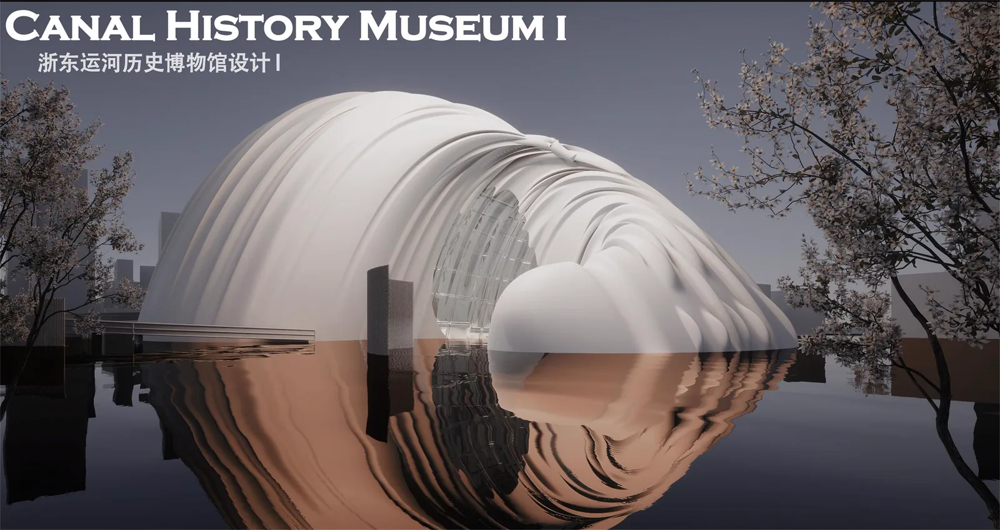
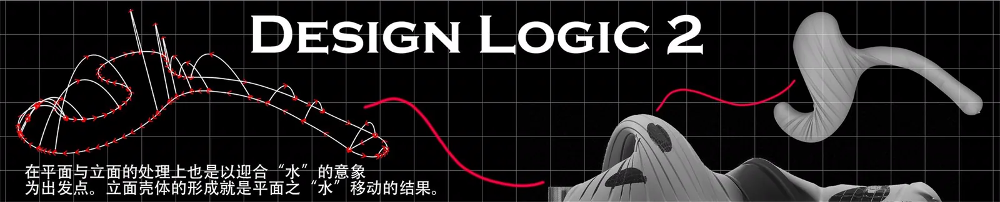
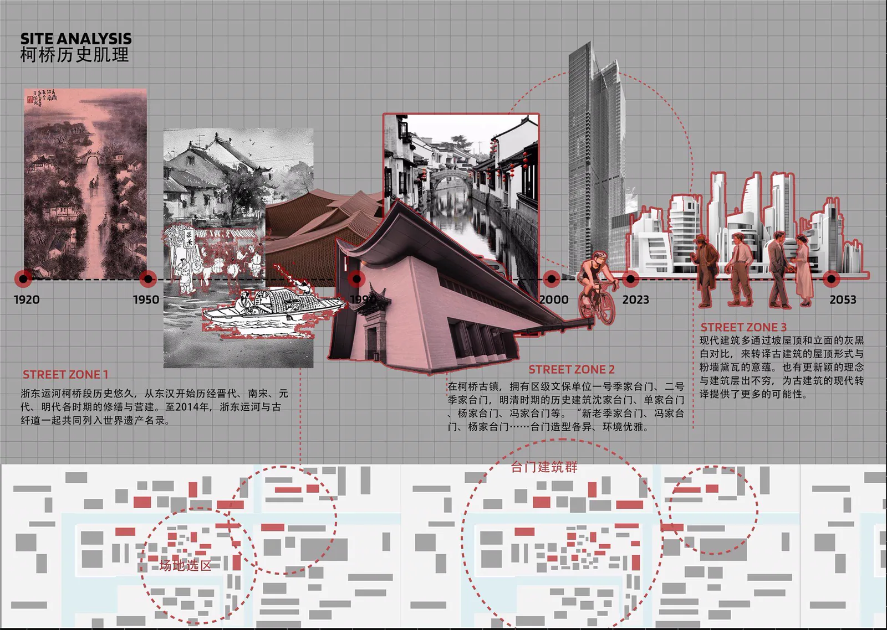
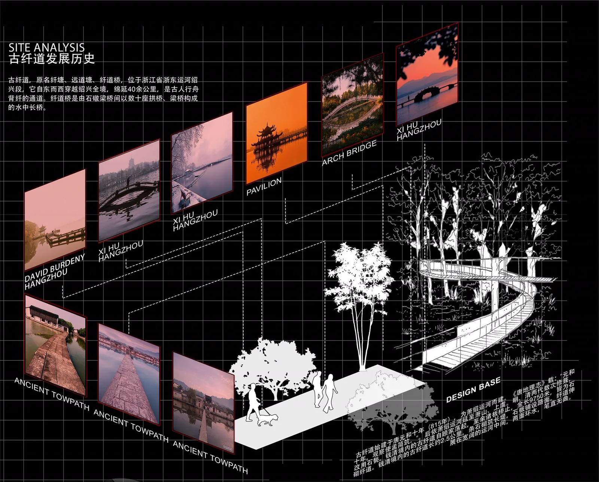
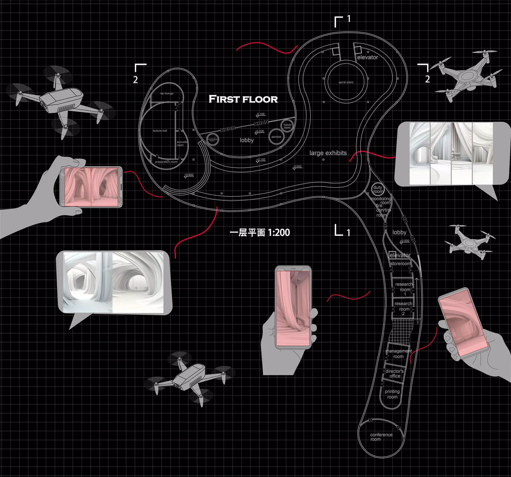
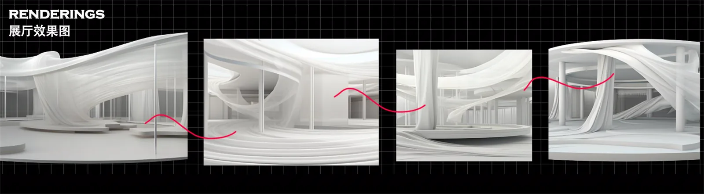
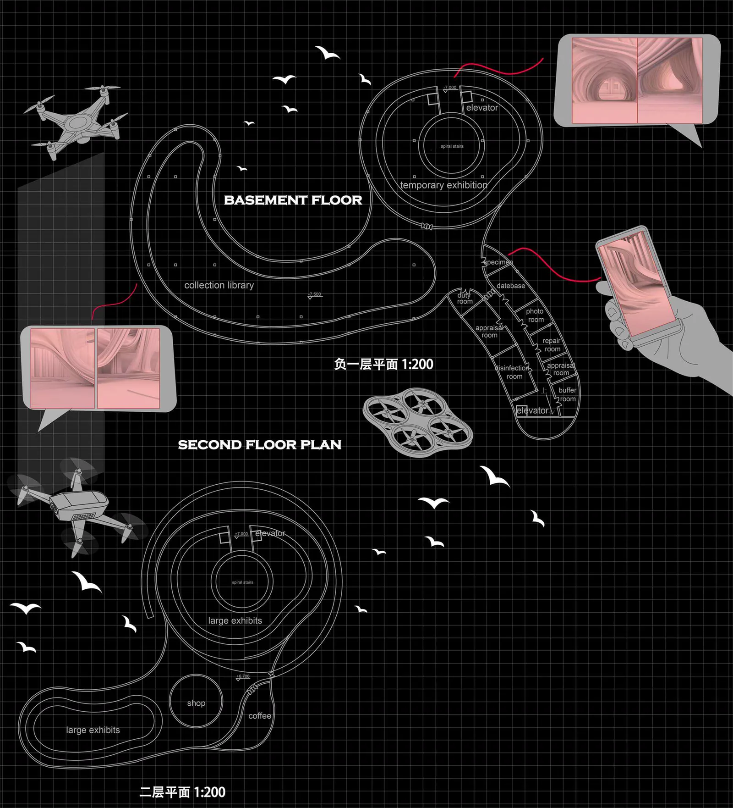
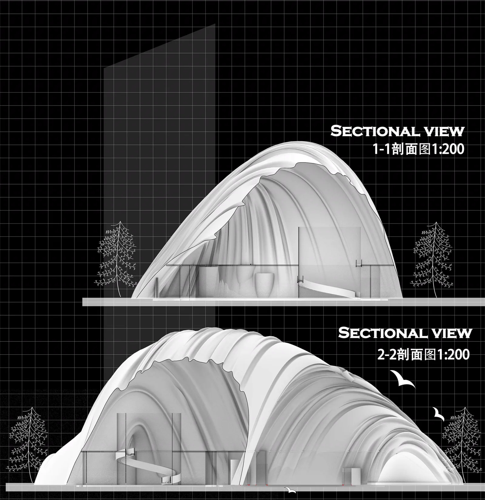

PROJECT 01 / 2023
浙东运河博物馆Grand Canal Museum
水之上，古纤道之上。Upon the water, upon the ancient towpath.
主效果图Main rendering
博物馆沿河岸展开，水平体量与水面对话，屋面壳体的波浪纹理回应水面的光影。
The museum extends along the canal. Its horizontal mass meets the water, while the wave-textured shell responds to shifting light and reflections.


设计逻辑Design logic
将场地与建筑融为「水」的意象：无论身处场地还是建筑之中，游览都如行走在古纤道之上。
Site and building share the image of water: whether outside or inside, the visit reads as a walk along the ancient towpath.



总平面与纹理生成Plan & wave texture
平面与立面从「水」的意象出发。参数调节波浪纹理的突出高度与密度，再将纹理整体流动到建筑曲面。
Plan and elevation follow the image of water. Parameters tune the protrusion height and density of the wave texture before it flows onto the curved building surface.


爆炸结构图Exploded structure
屋面壳体、桁架系统与一层框架系统被分解为三个层次，呈现波浪屋面与结构的构造关系。
Roof shell, truss system and first-floor framework are separated into three layers, revealing how the wave-textured roof meets its structure.

场地分析Site analysis
古纤道沿浙东运河穿越绍兴。设计从柯桥的历史肌理出发，观察坡屋顶、粉墙黛瓦与当代建筑之间的关系。
The ancient towpath crosses Shaoxing along the East Zhejiang Canal. The design reads Keqiao's historic fabric through pitched roofs, white walls and their contemporary translation.




一层平面与效果图Ground floor & rendering
门厅、展厅与研究室沿展线布置；展厅效果图呈现展陈空间的比例与氛围。
Lobby, galleries and research rooms follow the exhibition route; the gallery rendering presents the proportion and atmosphere of the exhibition space.




地下一层与二层平面Lower & second floor
临时展厅、数据库与藏品库位于地下；二层围绕中庭组织永久展陈与公共空间。
Temporary galleries, database and collection storage sit below ground; permanent galleries and public space gather around the second-floor atrium.


剖面图Section
从河面到屋面壳体，滨水步道、通高展厅与天窗形成逐级抬升的垂直序列。
From water level to roof shell, the waterfront walk, double-height galleries and skylights form a rising vertical sequence.


西立面与北立面West & north elevations
立面呈现屋面壳体的收束，建筑在此回望古纤道与运河。
The elevations show the gathering roof shell, where the building turns back towards the towpath and the canal.